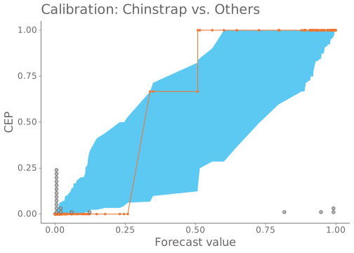
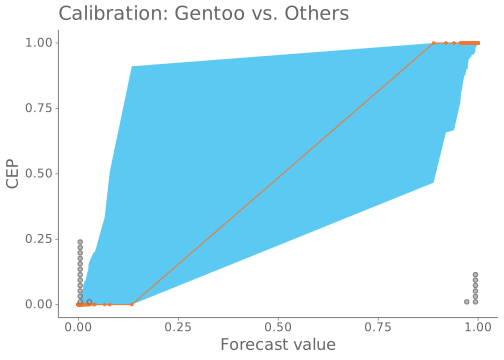

Calibration plots for the easy tasks of identifying penguin species in the Palmer Penguins data set.
The data
Code
if (FALSE) {data("iris") X <- dplyr::select(na.omit(iris), -c("Species")) y <-as.numeric(iris$Species)} else {library(palmerpenguins)data("penguins") X <-na.omit(penguins)[, c(3,4,5,6)] y <-as.factor(na.omit(penguins)$species)}
Running MCMC with 4 parallel chains...
Chain 1 finished in 5.9 seconds.
Chain 4 finished in 5.9 seconds.
Chain 3 finished in 6.2 seconds.
Chain 2 finished in 6.4 seconds.
All 4 chains finished successfully.
Mean chain execution time: 6.1 seconds.
Total execution time: 6.5 seconds.
The calibration
The common approach of plotting a bar char of the observations overlaid with posterior means and 95% confidence intervals only gives a crude idea of the calibration of the model predictions.
Code
ppc_bars(as.numeric(y), fit$draws(variables ="yrep", format ="matrix")) +scale_x_continuous(breaks =1:3, labels =levels(y))
Code
plot_dotted_reliabilitydiag(x =exp(colMeans(fit$draws(variables =paste(paste("lpd[", 1:nrow(X), sep=""), ",1]", sep=""), format ="matrix"))), y =as.numeric(y ==levels(y)[1]), quantiles =20) +labs(title =paste("Calibration:", levels(y)[1], "vs. Others"))
Code
plot_dotted_reliabilitydiag(x =exp(colMeans(fit$draws(variables =paste(paste("lpd[", 1:nrow(X), sep=""), ",2]", sep=""), format ="matrix"))), y =as.numeric(y ==levels(y)[2]), quantiles =20) +labs(title =paste("Calibration:", levels(y)[2], "vs. Others"))

Code
plot_dotted_reliabilitydiag(x =exp(colMeans(fit$draws(variables =paste(paste("lpd[", 1:nrow(X), sep=""), ",3]", sep=""), format ="matrix"))), y =as.numeric(y ==levels(y)[3]), quantiles =20) +labs(title =paste("Calibration:", levels(y)[3], "vs. Others"))

Source Code
---title: "PPC Visualizations for Categorical Data"subtitle: "Palmer Penguins"date: "2023-01-30"date-modified: "`r format(Sys.Date(), '%Y-%m-%d')`"author: "Teemu Säilynoja"image: "../../docs/case_studies/categorical/categorical_palmer_penguins_files/figure-html/groups_scatter-1.svg"description: "Calibration plots for the easy tasks of identifying penguin species in the Palmer Penguins data set."format: html: toc: true code-fold: true code-tools: true code-line-numbers: true default-image-extension: svg fig-format: svg---```{r inport, message=FALSE}library("bayesplot")library("cmdstanr")library("ggplot2")library("khroma")library("quartoExtra")# Source for the modified reliability plotsource("../../code/helpers.R")good_theme <- bayesplot::theme_default(base_family ="Sans") +theme(axis.text =element_text(colour ="#666666", size =12),axis.ticks =element_line(colour ="#666666"),title =element_text(colour ="#666666", size =16),plot.subtitle =element_text(colour ="#666666", size =14),legend.text =element_text(colour ="#666666", size =12),legend.title =element_text(colour ="#666666", size =14),axis.line =element_line(colour ="#666666"))theme_set(good_theme)bayesplot_theme_set(good_theme)color_scheme_set(scheme =c(unname(colour("vibrant")(7)[c(3,2,5,4,1,6)])))scale_colour_discrete = scale_colour_vibrantscale_fill_discrete = scale_fill_vibrantsource("../../code/helpers.R")SAVE_MODEL =TRUE```Calibration plots for the easy tasks of identifying penguin species in the Palmer Penguins data set.# The data```{r load.data}if (FALSE) {data("iris") X <- dplyr::select(na.omit(iris), -c("Species")) y <-as.numeric(iris$Species)} else {library(palmerpenguins)data("penguins") X <-na.omit(penguins)[, c(3,4,5,6)] y <-as.factor(na.omit(penguins)$species)}``````{r}#| label: groups_scatter#| dev.args :#| bg: transparentggplot(X, aes(x = bill_length_mm, y = bill_depth_mm, colour = y)) +geom_point() +xlab("Bill length (mm)") +ylab("Bill depth (mm)") +labs(colour ="Species") +legend_move(position ="top")```# The model```{r stan.model}if (FALSE) {# model directory contains the required model# load precompiled model} else { model_code =" data { int N; // number of observations int D; // number of features int N_classes; // number of classes matrix [N, D] X; // observation data array[N] int <lower = 1, upper = N_classes> y; // target values {1,..., N_classes} } transformed data { matrix[D + 1, N] X_stn; X_stn[D + 1, ] = rep_row_vector(1, N); for (d in 1:D) { X_stn[d,] = to_row_vector((X[, d] - mean(X[, d])) / sd(X[, d])); } } parameters { matrix[N_classes, D + 1] W; } transformed parameters { matrix[N_classes, N] Beta; for (c in 1:N_classes) { Beta[c, ] = W[c, ] * X_stn; } } model { for (d in 1:(D + 1)) { for (c in 1:N_classes) { target += normal_lpdf(W[c, d] | 0, 1); } } for (n in 1:N) { target += categorical_logit_lpmf(y[n] | Beta[,n]); } } generated quantities { vector[N] yrep; for (n in 1:N) { yrep[n] = categorical_logit_rng(Beta[,n]); } matrix[N,N_classes] lpd; for (n in 1:N) { for (c in 1:N_classes) { lpd[n, c] = categorical_logit_lpmf(c | Beta[,n]); } } } " model =cmdstan_model(write_stan_file( model_code,dir =if(SAVE_MODEL) "../../code/stan-models"elsetempdir(),basename ="penguins_glm", ))}``````{r}fit <- model$sample(data =list(N =nrow(X),D =ncol(X),N_classes =length(unique(y)),X = X,y =as.numeric(y)),parallel_chains =4,refresh =0)```# The calibrationThe common approach of plotting a bar char of the observations overlaid with posterior means and 95% confidence intervals only gives a crude idea of the calibration of the model predictions.```{r}#| label: ppc_bars#| message: false#| dev.args : #| bg: transparentppc_bars(as.numeric(y), fit$draws(variables ="yrep", format ="matrix")) +scale_x_continuous(breaks =1:3, labels =levels(y))``````{r}#| label: reliab_adelie#| dev.args : #| bg: transparentplot_dotted_reliabilitydiag(x =exp(colMeans(fit$draws(variables =paste(paste("lpd[", 1:nrow(X), sep=""), ",1]", sep=""), format ="matrix"))), y =as.numeric(y ==levels(y)[1]), quantiles =20) +labs(title =paste("Calibration:", levels(y)[1], "vs. Others"))``````{r}#| label: reliab_chinstrap#| dev.args : #| bg: transparentplot_dotted_reliabilitydiag(x =exp(colMeans(fit$draws(variables =paste(paste("lpd[", 1:nrow(X), sep=""), ",2]", sep=""), format ="matrix"))), y =as.numeric(y ==levels(y)[2]), quantiles =20) +labs(title =paste("Calibration:", levels(y)[2], "vs. Others"))``````{r}#| label: reliab_gentoo#| dev.args : #| bg: transparentplot_dotted_reliabilitydiag(x =exp(colMeans(fit$draws(variables =paste(paste("lpd[", 1:nrow(X), sep=""), ",3]", sep=""), format ="matrix"))), y =as.numeric(y ==levels(y)[3]), quantiles =20) +labs(title =paste("Calibration:", levels(y)[3], "vs. Others"))```